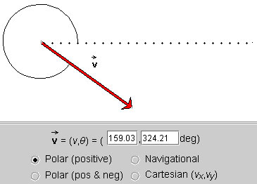
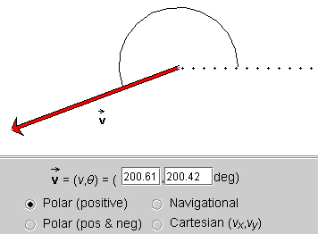
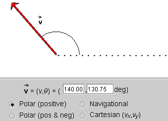
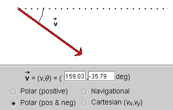
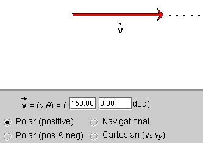
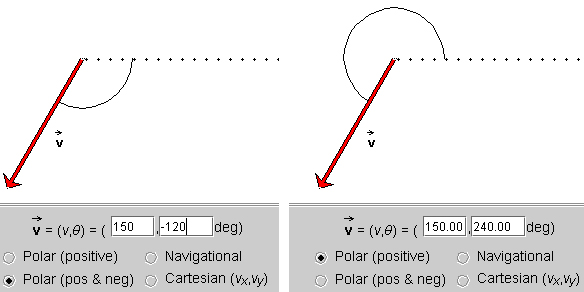
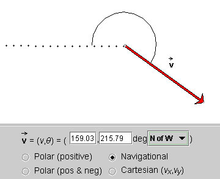
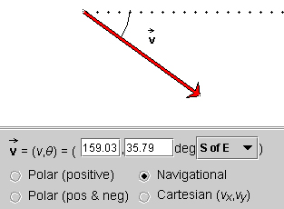

This page is designed to get you started using the applet. The applet should be open. The step-by-step instructions on this page are to be done in the applet. You may need to toggle back and forth between instructions and applet if your screen space is limited.
 Four
Ways of Specifying a Vector
Four
Ways of Specifying a Vector
 Polar (positive)
Polar (positive)
 Polar (positive and negative)
Polar (positive and negative)
 Navigational
Navigational
 Cartesian x and y Components
Cartesian x and y Components
When the applet is loaded, it will already display a vector. You should see a vector similar to the one shown below, although with somewhat different magnitude and slightly different direction.

Make sure that the radio button labeled "Polar (positive)" is selected, as in the snapshot.
Exercise 1. Change the vector to a vector of magnitude close to 200 and with a direction angle close to 200o, by working with the arrow. (You will probably not be able to get these values exactly, but you should be able to get a vector in a magnitude range from 199 to 201 and an angle range from 199o to 201o.
To change the arrow, click either on its tip or tail and drag. You may need to move the arrow to another location, without changing its magnitude or direction. To do so, click near the middle of the arrow and drag.
When done, you should have a display similar to that shown in the following snapshot. The two data fields in the control panel display the magnitude of the vector and the angle.

Note that the magnitude shown in the data field is measured in pixels.
Exercise 2. Change the vector to a vector of magnitude 140.00 and angle 130.75o by working with the data fields in the control panel. Type this pair of values in the two data fields, then press ENTER on the keyboard. You should see the display shown in the next snapshot.


The applet works with vectors in two dimensions. Two numbers are needed to specify a vector in two dimensions. There is no unique way to choose this pair of numbers. The applet offers you four different kinds of number pairs that all can be used to specify a vector in two dimensions. The four possibilities are accessed by clicking the appropriate radio button in the control panel.
The following exercises will let you work with each of these possibilities.
Exercise 3. Click the radio button labeled "Polar (positive)", as in the following snapshot.
In this mode, the vector is specified by its polar coordinates: magnitude and direction angle. The direction angle is taken between the vector and the 'East' direction, indicated by a dotted line. All angles are positive between 0 and 3600, increasing in the positive (counter-clockwise) sense starting at the reference line. Notice the arc indicating the angle.
The magnitude of the vector shown in the control panel is in pixels. This is true in all four modes.
Exercise 2 above already asks you to set a vector using this mode. In the present Exercise, let's do something different. Position the tail end of the vector as near to the center of the applet window as possible, by clicking on the vector somewhere near its middle and dragging. Then click on the tip of the vector and adjust the vector's magnitude to close to 150. Finally, by dragging the vector's tip in a counter-clockwise direction, change the vector so that its direction angle keeps on increasing while the vector's magnitude stays roughly equal to 150.
Observe that the angle will eventually reach 360o and then restart at 0o as you continue dragging the tip counter-clockwise.
Exercise 4. Click the radio button labeled "Polar (pos & neg)", as in the following snapshot. Notice that the angle has a negative value, -35.79o.

Again, position the tail end of the vector as near to the center of the applet window as possible. In the data fields, set the magnitude and angle equal to 150 and 0, respectively. You should get a display like in the following snapshot, except that here the tail end of the vector is not quite in the middle of the applet window.

Drag the vector's tip in a counter-clockwise direction while keeping the vector's magnitude roughly equal to 150. Observe that the angle keeps on increasing up to 180o, at which point it suddenly jumps to -180o and then goes on decreasing to 0o until you are back at the starting point shown above. Then change the vector away from 0o, this time rotating it in the negative (clockwise) direction. Observe that the angles are becoming more negative up to -180o, at which point the angle jumps to +180o and then decreases from there on.
Exercise 5. Set a vector with magnitude equal to 150 and angle equal to -120o. Then click the Polar (positive) button. The angle in the data field should change to 240o. Then switch back to Polar (pos & neg). Notice how the arc indicating the angle between the vector and the dotted reference line jumps.

Exercise 6. Click the radio button labeled "Navigational", as in the following snapshot. The angle is shown as 215.79o NofW (North of West).

Set the vector in your applet to the same angle and compass direction. To change the compass direction, click on the compass direction that is displayed in the control panel of your applet. This will open up a drop-down menu. Select "NofW" from this menu.
Notice that when "NofW" is chosen the dotted line runs 'west' from the tail end of the vector. Angles are now defined starting from this west direction and are measured positive from west towards north, i.e., in the clockwise sense. Angles can increase up to 360o continuing clockwise from the west direction. E.g., the angle in the snapshot above is 215.79o. Notice how the arc indicates this angle starting from the west direction and going clockwise from there to the vector.
On a sheet of paper, draw your present vector and then draw its angle corresponding to the direction "SofE". Also predict the magnitude of the angle. Then check your prediction by selecting "SofE". The following snapshot shows the angle.

Exercise 7. Click the radio button labeled "Cartesian (vx,vy)", as in the following snapshot.

The vector  is specified by its
x and y (scalar) components
(vx,vy) relative to a pair of
horizontal (x) and vertical (y) axes. The
x-component is shown in green, and the y-component in
yellow.
is specified by its
x and y (scalar) components
(vx,vy) relative to a pair of
horizontal (x) and vertical (y) axes. The
x-component is shown in green, and the y-component in
yellow.
Change the vector by dragging either its tip or its tail end and observe how the components change, both their graphical representations and their values in the data fields.
Try to change the vector by dragging in such a way that either only its x or its y component changes.
Observe in what quadrant the vector must be for its components to be positive or negative.